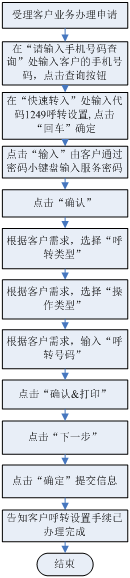

呼转设置
一、业务介绍
客户申请呼叫转移功能后，可以在此界面为客户设置呼转号码。
转移方式：
（1）无条件转移:将所有来电转移到客户预先设定的电话上，无条件转移具有最高优先级，当设置此项功能后，其他转移功能自动失效。
（2）关机转移：设置后，当客户手机关机或收不到信号时，来电会自动转移到客户预先设定的电话上。
（3）无应答转移:设置后，当客户手机接通而无人应答时，来电会自动转移到客户预先设定的电话上。
(4)遇忙转移:设置后，当客户正在通话时，如其他人对他进行呼叫，来电会自动转移到客户预先设定的电话上，除无条件转移只能单独使用外，其它转移可同时使用。
二、注意事项：
1、尽量引导客户通过手机自行设置。
2、呼叫转移设置变更原则:
（1）单向停机、双向停机、欠费停机、预拆、预销
客户单向停机、双向停机、欠费停机、预拆、预销后，交换机暂停客户的呼叫转移功能，不清除客户的呼转设置。在交费开机、预拆、预销恢复后，恢复客户的呼叫转移功能，原呼转设置仍可继续使用。
（2）关闭语音
客户申请“关闭语音”业务后，交换机暂停客户的呼叫转移功能，同时清除客户的呼叫转移设置。客户取消“关闭语音”业务后，恢复客户的呼叫转移功能，原呼转设置不能继续使用，需重新设置。
（3）报停、挂失
客户报停、挂失后，交换机暂停客户的呼叫转移功能，同时清除客户的呼叫转移设置。客户复话后，恢复客户的呼叫转移功能，原呼转设置不能继续使用，需重新设置。
（4）补卡后原呼转设置不能继续使用，需重新设置。
3、业务资费标准：
（1）无条件前转：
基本呼转费+归属地至前转地长途费。关机/不可及呼转计费原则按无条件呼转计。客户呼转到本地号码，只收取基本呼转费，不收取长途费。
（2）有条件前转：
有条件前转包括遇忙呼转及无应答呼转，收费标准为
1）非漫游时
基本呼转费+归属地至前转地的国内长途费，客户呼转到本地号码，只收取基本呼转费，不收取长途费。
2）漫游时
基本呼转费+国内被叫漫游费（0.4元/分钟）+国内主叫漫游费（0.6元/分钟，若客户此次通话占用漫游地至前转地的长途电路，则收取，否则不收取）。
注：基本呼转费为0.20元／分钟，呼转到13800XYZ309，基本呼转费为：收取被叫客户每次0.10元 。
三、相关业务规范
客户凭服务密码即可办理
四、操作流程图

五、操作界面说明 (点击查看详细内容)